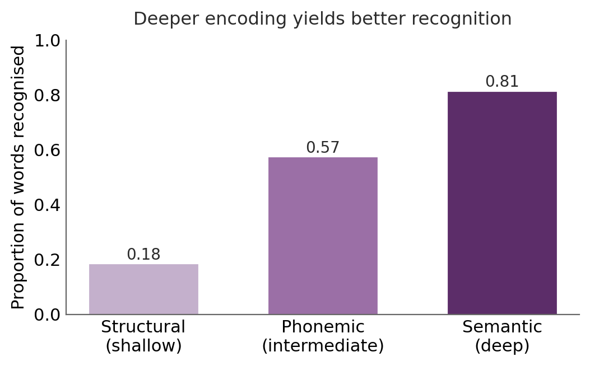
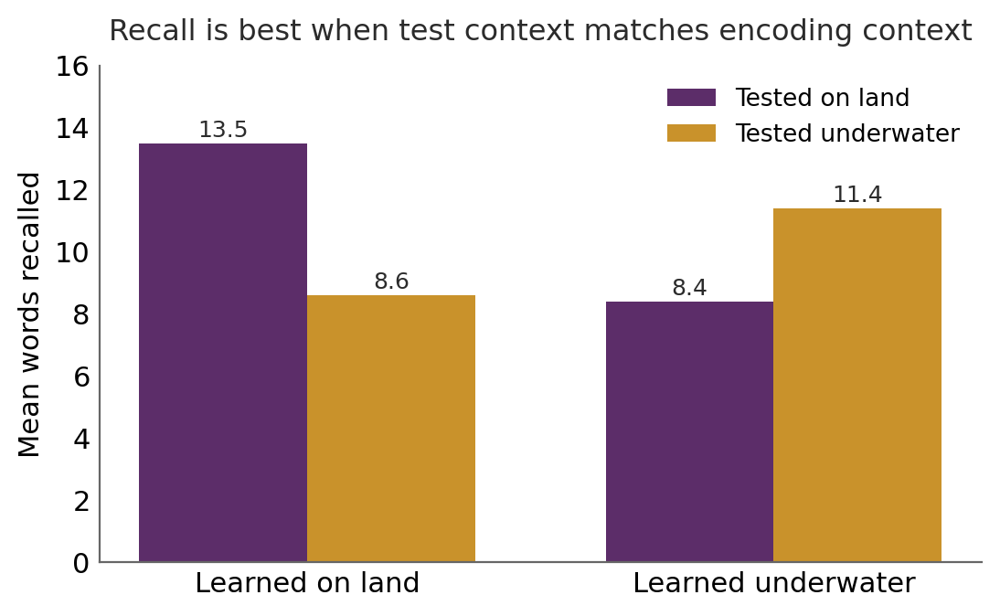
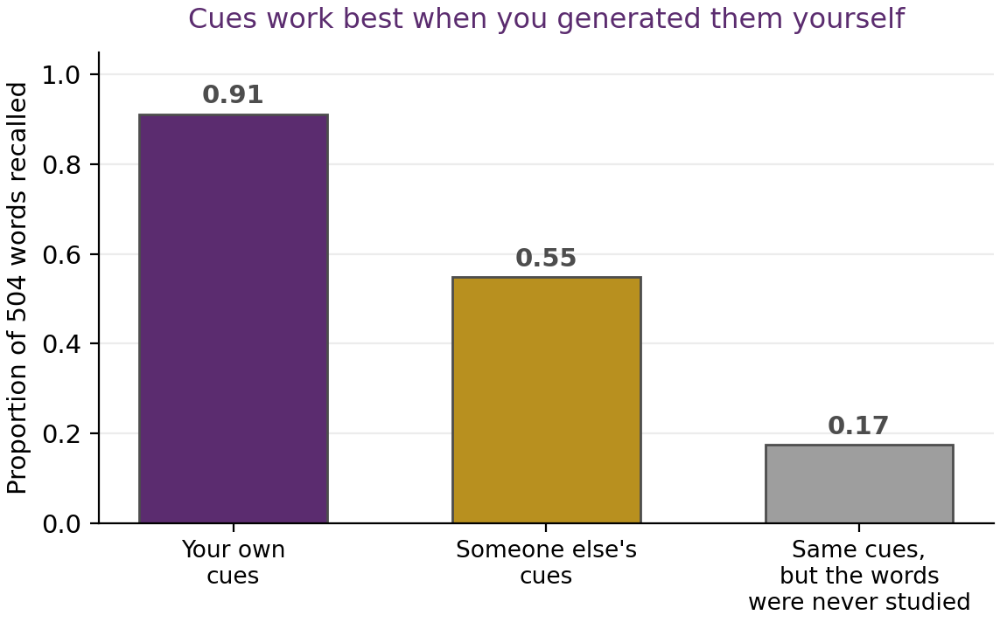
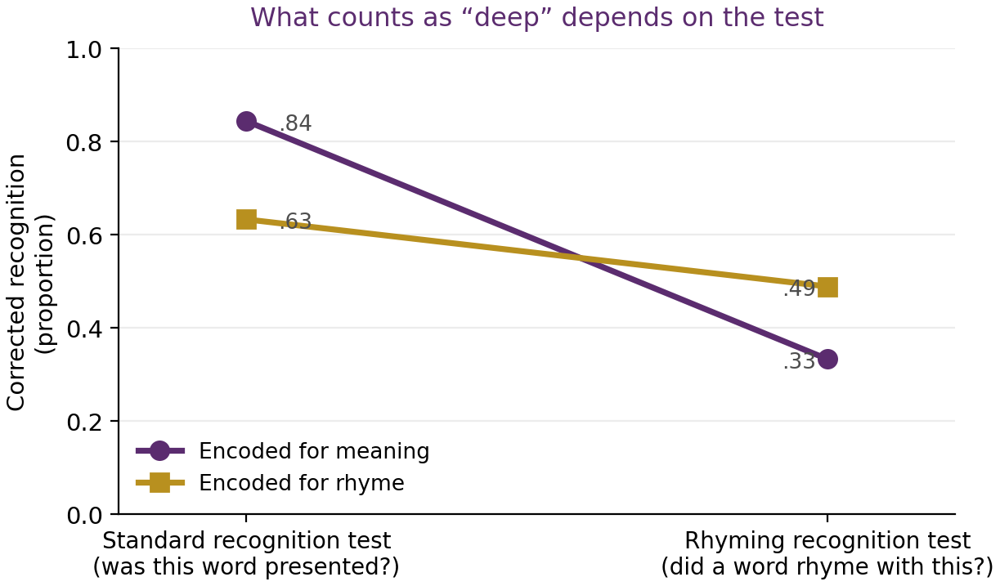
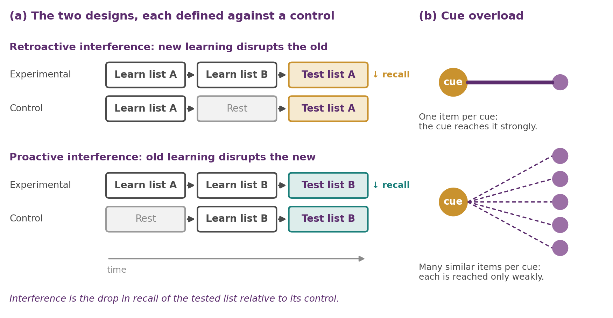
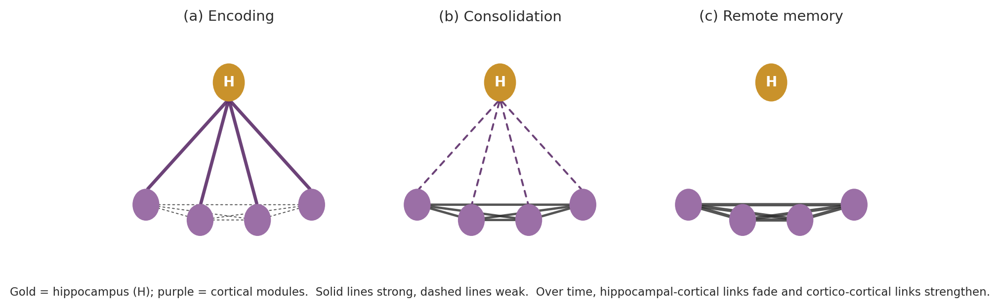
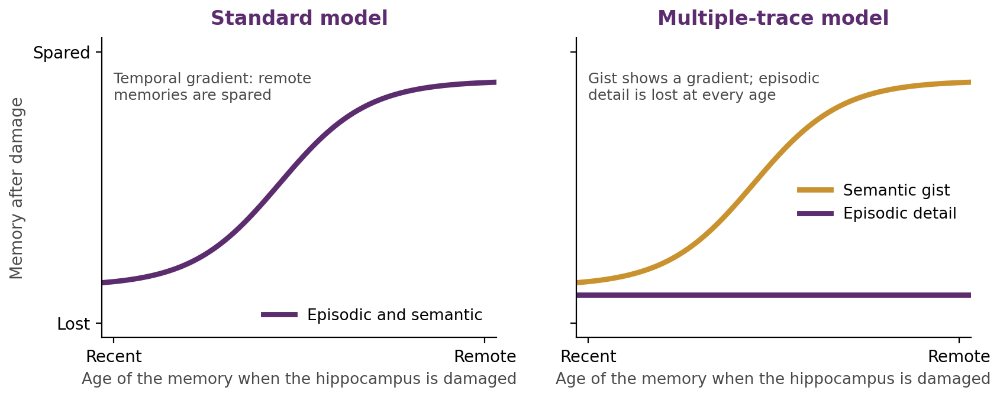
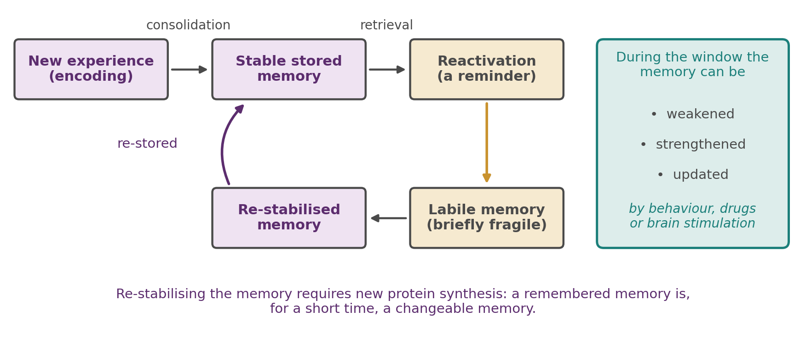

Chapter 5
Long-Term Memory: Encoding, Retrieval and Consolidation
Where this chapter sits
Chapter 4 asked what long-term memory is made of. We separated episodic from semantic memory, used the serial-position curve to expose two systems at work, and ran the double-dissociation argument four times over to show that the divisions are real rather than merely tidy. That chapter was about structure: the kinds of memory and the brain systems that support them.
This chapter is about process. How does an experience get into long-term memory in the first place? Why can we often not retrieve what we know perfectly well is in there? Once a memory is formed, what makes it durable, and can it be changed again afterwards? Structure told us where the filing cabinets are. Here we ask how things get filed, how we find them again, how the files are made permanent, and, more unsettlingly, how they get quietly edited.
Two threads from Chapter 4 are picked up directly. There we distinguished a memory being available from its being accessible, and noted that free recall, cued recall and recognition give very different scores for the same material; §5.5 explains why. And §4.6 introduced sharp-wave ripple replay as the mechanism by which memories are handed from hippocampus to cortex; §5.7 is where that process is treated properly, including the reasons for doubting that the handover is ever complete.
Learning objectives
5.1 Three stages: encoding, storage and retrieval
Psychologists divide the memory process into three necessary stages. Encoding is the initial learning of information, the conversion of a perceptual experience into a form the brain can hold. Storage is the maintenance of that information over time. Retrieval is getting at the information when it is needed, which for long-term memory means bringing it back into the workspace of Chapter 3. Meet someone at a party and you must encode her name and bind it to her face, keep that association over the following week, then, on seeing her again, use her face as a cue to retrieve the name. Any successful act of remembering requires all three stages to have worked.
This matters because it tells us that forgetting is not one thing. When you cannot produce a name, the failure could sit at any of the three stages: you may never have encoded it properly, the trace may have degraded in storage, or the information may be perfectly intact but momentarily inaccessible for want of the right cue. Those are different problems with different remedies, and only the last one is reversible on the spot. A second kind of error, misremembering, is not a failure to produce anything but the production of the wrong thing, and it too can originate at any of the three stages.
Keep the framework in mind, but do not take the compartments too seriously. Most of the phenomena in this chapter are manipulations of one stage that show their effect at another. How you encode determines which cues will work at retrieval. The act of retrieval itself changes the stored trace. And as §5.7 will show, storage is not a passive interval between the other two but an active process in its own right.
5.2 Getting information in: rehearsal and the quality of encoding
The modal model of Chapter 3 proposed that rehearsal is the pump that moves information from short-term into long-term memory. That is only half right, because it matters a great deal what kind of rehearsal you do.
Maintenance rehearsal is rote repetition that holds information in mind without engaging its meaning: repeating a phone number until you have dialled it. It keeps the item available for the moment but does little to build a durable trace, which is why the number is gone five minutes later. Elaborative rehearsal processes meaning and forms connections to what you already know, and it is far more effective at getting information into long-term memory. The same amount of time, spent differently, produces quite different results, which already tells you that the modal model's single arrow was hiding something important.
Why should meaning matter so much? Part of the answer is distinctiveness. An event that stands out against a background of similar events is well remembered. See a giraffe on your walk across campus and the memory is fixed for years, while the hundred ordinary walks blur together. Emotionally charged events are similarly privileged, producing the vivid, confidently held flashbulb memories described by Brown and Kulik (1977). One caution is worth stating plainly, because it recurs throughout memory research: confidence and accuracy are not the same thing. Flashbulb memories feel photographic, but they drift and distort like any other memory, and people do not notice the drift (Talarico & Rubin, 2003). Hold that thought until §5.8.
The other part of the answer is recoding. We do not store raw input; we transform it into something we can make sense of, and richer transformation leaves a better trace. In the dual-system language of this book, elaborative encoding is the Rider's work. It takes attention and intention, whereas the drift of information out of short-term memory requires no effort at all. That asymmetry is the reason good study habits feel like work.
5.3 Levels of processing
Craik and Lockhart (1972) turned the observation that meaning matters into a theory. They proposed that memory is not the goal of a special storage operation at all, but a by-product of the depth at which a stimulus is analysed. Shallow processing attends to surface features, the shape of the letters or the sound of the word, and leaves a fragile trace. Deep processing engages the meaning of the item and leaves a durable one. Depth is a continuum rather than a switch, and later work identified two things that make processing deep (Craik & Tulving, 1975): elaboration, the richness of the connections drawn to existing knowledge, and distinctiveness, the degree to which the resulting trace stands apart from others.
Craik and Tulving (1975) provided the classic demonstration. Participants saw a series of words, each preceded by a question that forced a particular kind of processing: a structural question about the word's appearance (is it in capital letters?), a phonemic question about its sound (does it rhyme with a given word?), or a semantic question about its meaning (would it fit in this sentence?). The design has a feature worth noticing, because it is what makes the result interpretable: participants did not know their memory would be tested. The depth of processing was driven entirely by the question, not by any intention to learn, so the effect cannot be attributed to some people trying harder. Later recognition rose steadily with depth.

Rogers, Kuiper and Kirker (1977) later added what looks like an even deeper level, the self-reference effect: judging whether a word describes you produces better recall still than ordinary semantic processing. The usual explanation is that the self is the most richly elaborated structure any of us possesses, so relating material to it guarantees a large number of connections. Notice that this connects to §4.4, where episodic memory turned out to be bound up with the self; here the self earns its keep as an encoding device.
Where levels of processing runs into trouble
The theory is intuitive and its predictions usually hold, which is why it has survived for half a century. It also has a genuine weakness that you should be able to state: circularity. How do we know a given process was deep? Because it produced good memory. Why was memory good? Because the process was deep. Without a measure of depth that is independent of the memory outcome, the theory risks explaining a result by re-describing it. There is no agreed ruler for depth, and attempts to supply one, such as processing time or effort, turn out not to track memory reliably.
The framework is also incomplete in a more specific way. It says that richer encoding is generally better, full stop. But whether a particular kind of encoding helps depends on what you will be asked to do at retrieval, and that qualification is the most important repair the theory has received. It is set out in §5.5, which is why these two sections have to be read together.
5.4 Encoding strategies that actually work
If deep, distinctive, well-connected encoding builds durable memories, the practical strategies follow directly. Each of the following has good experimental support, and each is a way of forcing the kind of processing that leaves a strong trace. They are listed here as techniques, but the point is not to memorise a list: each one is a principle from §5.3 made operational.
Imagery. Forming a vivid mental image of the material, or an interactive image linking two items (imagine a tree growing out of a boat), improves recall well beyond rote repetition. Imagery is elaboration made concrete, and the interactive part matters: an image that binds the two items together is far better than two separate images.
Self-reference. Relating material to yourself, as in Rogers and colleagues' study, exploits the depth of the self-schema. Asking “how does this apply to me?” is a cheap and powerful study habit.
The generation effect. Information you produce yourself is remembered better than the same information read passively (Slamecka & Graf, 1978). Filling in a blank beats re-reading the completed sentence. The effort of generation is the point, not a nuisance to be minimised, and that principle is worth holding on to because it runs against how studying usually feels.
Organisation and retrieval cues. Material organised into a meaningful structure is recalled far better than the same material presented in a jumble (Bower et al., 1969). Grouping a shopping list into fruit, dairy and cleaning products gives you category cues that guide retrieval later. Organisation at encoding is therefore an investment in retrieval, which is the theme of §5.5.
Survival processing. Rating words for their relevance to a survival scenario, such as being stranded on grasslands needing food and safety from predators, produces better recall than almost any other deep-encoding task (Nairne et al., 2007). This is usually read as evidence that memory is tuned by natural selection to prioritise fitness-relevant information.
The spacing effect. Study distributed across sessions beats the same total time massed into one session. Spacing forces partial forgetting and effortful re-retrieval between sessions, and that effort is thought to be what strengthens the memory. Cramming feels efficient because it feels fluent, and fluency is a poor guide to durable learning.
The testing effect
The single most robust of these strategies is the testing effect, also called retrieval practice: the act of retrieving information strengthens the memory more than an equivalent period of restudy. Testing is not merely a way of measuring what you know; it is one of the best ways of learning it. Roediger and Karpicke (2006) found that students who repeatedly tested themselves on a passage recalled far more a week later than students who repeatedly reread it, even though the rereaders had seen the material several times more often.
Karpicke and Roediger (2008) made the point sharply. In the three conditions shown in Table 5.1 (the original study had four), students initially studied and were tested on a set of word pairs, then differed in what happened on later rounds. Group 2 stopped restudying pairs once those pairs had been recalled. Group 3 stopped testing pairs once they had been recalled. The result a week later is the whole lesson of this chapter in two numbers.
| Group | Initial study | Initial test | Later study rounds | Later test rounds | Recall after 1 week |
| 1 (standard) | All pairs | All pairs | All pairs | All pairs | ~81% |
| 2 (less studying) | All pairs | All pairs | Only pairs not yet recalled | All pairs | ~81% |
| 3 (less testing) | All pairs | All pairs | All pairs | Only pairs not yet recalled | ~36% |
Table 5.1 Design and one-week results of Karpicke and Roediger (2008). Dropping repeated retrieval (Group 3) was catastrophic; dropping repeated study of already-learned pairs (Group 2) cost nothing at all.
Read the table carefully, because the comparison that matters is between Groups 2 and 3, not between either and Group 1. Both cut their workload. Group 2 dropped repeated study and lost nothing. Group 3 dropped repeated testing and fell by more than half. Repeated retrieval was doing the work; repeated study of something already learned added almost nothing. If you take one practical thing from this unit, this is a reasonable candidate.
5.5 Retrieval and the match between encoding and test
Encoding puts information in; retrieval brings it back. In Chapter 4 you met the three ways of asking for it: free recall, where you must produce the material unaided; cued recall, where you are given a hint; and recognition, where the item itself is supplied and you need only decide whether you have met it. Recognition is usually easiest because the item is the most complete cue available. We also drew the distinction between a memory being available and being accessible. This section explains what governs accessibility, and the answer turns out to be a single idea applied in several places.
Encoding specificity
Tulving and Thomson (1973) formulated the encoding specificity principle: a retrieval cue is effective to the extent that it overlaps with what was encoded at the time of learning. A cue works not because it is inherently powerful but because it reinstates the original conditions of encoding. This reframes retrieval failure in a way that should now sound familiar. Much of what we call forgetting is not loss of the trace at all, but a mismatch between the cues available now and the cues bound in then.
The most memorable demonstration is Godden and Baddeley's (1975) study of scuba divers, who learned a list of words either on dry land or some twenty feet underwater and then tried to recall them in either the same environment or the other one. Recall was markedly better when the test environment matched the learning environment. This is context-dependent memory: the external setting becomes part of the encoded trace and can cue retrieval later.

The practical corollary is worth stating, because students often disbelieve it: studying in conditions resembling the exam is not superstition, it is encoding specificity. But do not overread it either. The effect is reliable for free recall and much weaker for recognition, precisely because in recognition the item itself already supplies a strong cue and has less need of the context. A direct replication with sixteen divers also failed to find the same-context advantage (Murre, 2021), so the diver study is best read as a vivid illustration of the principle rather than as proof of a large effect.
State-dependent learning
The matching principle extends inward. In state-dependent learning the relevant context is not the room but your own internal state. Material learned under a given drug state is better recalled in that state, and mood shows the same pattern, with sad moods favouring retrieval of memories encoded when sad and happy moods favouring happy ones, although mood-dependent memory has proved much harder to replicate than drug-state effects and appears most reliably when people generate the material themselves (Eich, 1995). Your internal state at encoding is simply one more cue that has to be reinstated, which is why the same principle covers a diving suit and a mood.
Self-generated cues
If a cue works by overlapping with what was encoded, the best possible cue should be one you generated yourself at the time, because it is guaranteed to match the way you personally encoded the item. Mäntylä (1986) tested this on a scale that is worth pausing over. Participants were shown 504 nouns, one at a time, and asked to write down three properties of each: their own description, in their own words. They were not told that their memory would be tested. At an unexpected test, they were given cues and asked to recall the words.
Given their own three properties as cues, people recalled 91 per cent of the 504 words. That figure is remarkable in itself, because recall of a list that long is normally hopeless. What makes it an argument rather than a curiosity is the comparison conditions. Given three properties that another participant had generated for the same words, recall fell to 55 per cent, even though those cues were perfectly sensible descriptions of the same items.

The third bar is the one that makes the experiment airtight, and it is the kind of control worth learning to look for. An obvious objection to the whole result is that three good properties might simply describe a word well enough to let anyone reconstruct it, in which case nothing is being remembered at all. So Mäntylä gave the same cues to people who had never seen the words, and asked them to produce the target. They managed 17 per cent. The cues alone do not deliver the words; the cues plus your own encoding do.
Two lessons follow. The theoretical one is that cue effectiveness is about idiosyncratic overlap with a particular act of encoding, not about how good a cue looks in the abstract: the other participants' cues were not worse descriptions, merely someone else's. Mäntylä proposed that a cue needs two properties to work this well, compatibility with what was encoded and distinctiveness from other items, which are precisely the two ingredients §5.3 identified as making processing deep. The practical lesson is the strongest argument in this chapter against revising from someone else's notes. A classmate's summary is another person's retrieval cues, and on these numbers it is worth only about 60 per cent as much as your own.
Transfer-appropriate processing
The deepest idea here, and the repair to levels of processing promised in §5.3, is transfer-appropriate processing. Memory is best not when encoding was deep in some absolute sense, but when the type of processing at encoding matches the type required at retrieval.
Morris, Bransford and Franks (1977) made the point elegantly by running the levels-of-processing design and then changing the test. Participants encoded words either for meaning, by judging whether a word fitted a sentence, or for sound, by judging whether it rhymed with another word. Half were then given a standard recognition test, asking simply whether a word had been presented. The other half were given a rhyming recognition test, asking whether a word rhyming with the probe had been presented.
On the standard test, semantic encoding beat rhyme encoding, exactly as levels of processing predicts. On the rhyming test the pattern reversed, and participants who had encoded by rhyme outperformed those who had encoded for meaning. Deep semantic processing was not universally superior; it was superior for tests that demand meaning.

That crossing is what rescues the theory from circularity. Transfer-appropriate processing does not label whatever worked as deep after the fact; it makes a directional prediction in advance about which encoding will win for which test, and the prediction can fail. It is best read as encoding specificity applied to types of processing, and it treats the levels-of-processing advantage as a special case: the one that appears when the test demands meaning. A theory that absorbs its predecessor in this way is generally a good sign.
One qualification belongs here, because it is usually left out and it matters for how much weight the result can bear. In this design, each word arrived in a frame it either did or did not fit: a sentence it completed sensibly or did not, a word it rhymed with or did not. The reversal shown in Figure 5.4 comes from the items where the answer was yes. For the items where the answer was no, semantic encoding won on both tests and there was no crossover at all. So the famous crossover is real but conditional, and it depends on the target having been integrated with its frame at encoding rather than merely judged against it. Morris and colleagues were explicit that the role of congruency here needed further clarification, and it is still not fully resolved. The moral is not that transfer-appropriate processing is wrong. It is that the single most cited demonstration of it holds under narrower conditions than the textbook version implies, which is worth knowing before you rest an argument on it.
The practical version is uncomfortable for anyone revising: practising in the format you will be tested in matters more than practising hard.
5.6 Forgetting: interference and the limits of cues
So far forgetting has appeared as a retrieval problem: the trace is there, and the cue does not reach it. That is a large part of the story, but it leaves an obvious question unanswered. Why should cues stop working? The main answer is interference, and it is the second thing this chapter asks you to evaluate critically.
Two directions of interference
Interference comes in two forms, distinguished only by which memory suffers. In retroactive interference, new learning disrupts the retrieval of older material: you learn a new phone number and can no longer produce the old one. In proactive interference, old learning disrupts the retrieval of newer material: you keep producing last year's password instead of this year's. The designs are almost identical, which is why the terms are so often confused.

You have already met proactive interference in Chapter 4, where the release from it showed that memory codes by meaning even over a delay of a few seconds. That is worth recalling here, because it tells you something about the mechanism: interference builds up between items that are similar, not between items that merely happen to be adjacent in time. Similarity is doing the work.
Interference or decay?
Now the evaluation. The obvious rival account of forgetting is decay: traces simply fade with the passage of time. Decay is intuitive and it is very hard to test, because time never passes without something else also happening. That is the difficulty Chapter 3 raised for the Brown–Peterson task, and it recurs here in a more general form. To show decay you would need an interval in which time passed but no interfering material was encountered, and such intervals are hard to arrange in a waking person.
The evidence favours interference as the major cause, but not exclusively so, and the honest position is that the two are hard to separate rather than that one has won. Notice also how naturally interference fits the encoding-specificity framework of §5.5. If a cue is associated with many items, it points weakly to each of them, a problem known as cue overload (Figure 5.5b). On that reading, interference is not a separate mechanism at all but what happens when the cue-to-item mapping becomes crowded, which is why similarity matters and why release from proactive interference works by making the new items dissimilar. Whether interference reduces to cue overload or is something additional is still argued over, and it is a good example of two literatures describing what may be one phenomenon.
5.7 Consolidation: how a memory becomes durable
Encoding a memory and keeping it are different achievements. A newly formed trace is fragile and must be stabilised through a family of processes called consolidation. It is useful to distinguish two timescales, because they involve different mechanisms and different evidence. Synaptic consolidation happens within minutes to hours at individual synapses. Systems consolidation happens over days to years and involves a gradual reorganisation of where in the brain a memory is held. This section is deliberately physiology-heavy, because this is one of the places in the unit where the mechanism is the explanation.
The synaptic level: Hebb and long-term potentiation
Donald Hebb (1949) gave us the founding principle, which you met in Chapter 1 and which is usually paraphrased as cells that fire together wire together: when one neuron repeatedly takes part in firing another, the connection between them strengthens. The physiological realisation of Hebb's idea is long-term potentiation, first described by Bliss and Lømo (1973), in which brief high-frequency stimulation of a synaptic pathway produces a persistent increase in synaptic efficacy.
Long-term potentiation has the properties a memory mechanism ought to have, and it is worth being explicit about why each one is needed. It is rapid, because memories can be formed in a single episode. It is long-lasting, because memories are. It is input-specific, so that strengthening one pathway does not indiscriminately strengthen its neighbours, which a memory system plainly requires. And it is associative, so that inputs active together are strengthened together, which is what binding the elements of an experience demands. In the hippocampus it depends heavily on NMDA receptors acting as coincidence detectors, opening only when pre- and post-synaptic activity occur together, which is the molecular implementation of Hebb's principle.
Synaptic consolidation is what makes that early strengthening permanent, and it requires the synthesis of new proteins. This is why protein-synthesis inhibitors given shortly after learning block long-term but not short-term memory. Hold on to that fact. It becomes the key to §5.8.
The systems level: the standard model
At the systems level the central player is the hippocampus, and the puzzle is set by the patients of Chapter 4. H.M. could form no new declarative memories after his medial temporal lobes were removed, yet retained memories from well before the surgery. On the standard model (Squire & Alvarez, 1995; McClelland et al., 1995) the hippocampus rapidly binds together the distributed cortical fragments of an experience. Over time, through repeated reactivation, much of it during sleep, direct cortico-cortical connections are strengthened until the cortex can support the memory unaided and the hippocampus is no longer required. A memory's dependence on the hippocampus is therefore temporary, which is exactly why hippocampal damage spares old memories while preventing new ones.

The systems level: the multiple-trace model
The standard model is not the whole story. The multiple-trace model (Nadel & Moscovitch, 1997; Maguire, 2014) argues that the hippocampus never fully relinquishes rich, detailed episodic memories. On this view each act of retrieval lays down a new hippocampal trace, so vivid autobiographical memories remain hippocampus-dependent however old they are, while only the schematic, semantic gist becomes independent of it.
What makes this a real disagreement rather than a matter of emphasis is that the two models predict different patterns of retrograde amnesia, so evidence can in principle decide between them.

So the evidence to look for is the shape of the gradient, and whether what is lost is episodic or semantic. Patients with hippocampal damage who lose detailed episodic memories across their entire lifespan while retaining semantic knowledge are the multiple-trace model's best case, and the standard model struggles with them.
There is a complication that Chapter 4 raised and that bears directly on this debate. The temporal gradient in H.M., which is the standard model's headline evidence, is weaker than it looks: he had years of seizures and anti-epileptic medication before surgery, which may have prevented those recent memories forming in the first place (Hedges, 2022). If so, their later absence tells us nothing about consolidation. That does not settle the argument in favour of the multiple-trace model, but it does mean the standard model's central human case carries less weight than it is usually given. The debate remains open, and the useful thing is to understand what each model claims and what evidence would bear on it.
Consolidation and sleep
If systems consolidation depends on offline reactivation, sleep should be central, and it is. Memory consolidation is enhanced by sleep (Gais et al., 2006), and two mechanisms are usually proposed (Diekelmann & Born, 2010). The passive one is protection: sleep removes the interference that waking experience would otherwise impose on a fragile trace, which connects this section directly to §5.6. The active one is replay, and Chapter 4 already introduced its mechanism: during slow-wave sleep the hippocampus repeatedly reactivates the patterns of recent learning in sharp-wave ripples and, in effect, trains the cortex.
Consolidation is also selective rather than indiscriminate. Wilhelm and colleagues (2011) showed that memories were consolidated more strongly over sleep when participants expected to be tested afterwards, which is evidence that the sleeping brain preferentially stabilises what has been tagged as relevant. A later replication attempt found the usual benefit of sleep but no extra boost from expecting a test (Ashton & Cairney, 2021), so this selectivity should be treated as unsettled. In the framing of this book, consolidation is the Elephant's work: it proceeds automatically and offline, without any effort from the Rider, but what it chooses to work on depends on decisions the Rider made earlier.
Targeted memory reactivation
The clearest causal evidence that the sleeping brain replays and strengthens recent learning comes from targeted memory reactivation. The logic is elegant. During learning, an incidental cue (an odour or a sound) is paired with the material. Later, while the person sleeps, the same cue is quietly re-presented. If the cue triggers reactivation of the associated memory, then cueing during sleep should strengthen precisely the cued items, and it does. Rasch and colleagues (2007) paired learning with an odour and re-presented it during slow-wave sleep, improving later recall. Rudoy and colleagues (2009) tied sounds to particular object locations and found better memory for the individually cued locations than for uncued ones, which is the more impressive result because the cueing is item-specific. A meta-analysis of some ninety studies finds the benefit is real, small to moderate in size, and most clearly evident when cues are presented during non-REM sleep, stages 2 and 3, rather than REM sleep (Hu et al., 2020).
This matters for two reasons. It converts the replay account of consolidation from an inference into a manipulation: we can bias what the sleeping brain chooses to consolidate, which is a much stronger claim than that replay happens to correlate with better memory. And it opens applications, from language learning to weakening unwanted associations, that are only beginning to be explored.
5.8 Reconsolidation: memory as a work in progress
For most of the twentieth century consolidation was thought of as a one-way street: once a memory was consolidated, it was fixed. There were early hints otherwise: Misanin, Miller and Lewis (1968) found that electroconvulsive shock given just after a reminder could disrupt an old, consolidated memory in rats. But the finding was largely set aside for three decades. That picture is wrong. Reconsolidation is the finding that retrieving a consolidated memory returns it, briefly, to a labile state, from which it must be stabilised all over again in order to persist. A remembered memory is, for a short window, a changeable memory.

The demonstration that revived the idea comes from Nader, Schafe and LeDoux (2000). They trained rats in auditory fear conditioning, so that a tone predicted a shock, and let the memory consolidate. The following day they briefly played the tone to reactivate the memory, and then infused a protein-synthesis inhibitor into the amygdala. Now recall the fact flagged in §5.7: protein-synthesis inhibitors block the consolidation of new memories but leave already-consolidated ones untouched. Yet here the old, fully consolidated fear memory was abolished.
Follow the logic, because the experiment is a model of how to establish something surprising. The drug alone does nothing to an old memory. The reminder alone does nothing lasting. Only the two in combination destroy the memory. The most economical explanation is that reactivation had returned the memory to a protein-synthesis-dependent state, so that blocking synthesis during that window prevented it from being re-stored. Reactivation did not simply read the memory out; it reopened it.
Reconsolidation also allows memories to be updated rather than merely weakened. Hupbach and colleagues (2007) had people learn a list of objects, List A. Two days later, half were given a subtle reminder of the first session before learning a second list, List B. When later asked to recall List A, the reminded group intruded a large number of List B items into their List A memory, while the non-reminded group rarely did. The reminder had reactivated the List A memory, opening it to modification, and the new learning was absorbed into it.
This offers a candidate mechanism for a theme that has run through the last two chapters: remembering is reconstructive rather than reproductive. Memory is a work in progress, constantly rebuilt and quietly edited in the light of what happens after the original event. It also offers a plausible, though not directly tested, account of why the flashbulb memories of §5.2 drift while feeling photographic. Every time you retell the story you reopen it, and what gets re-stored is the version you just told.
Chapter summary
Memory has three interdependent stages: encoding, storage and retrieval. Forgetting and error can arise at any of them, and how you encode determines which cues will work later.
Maintenance rehearsal keeps information available briefly; elaborative rehearsal, which engages meaning and connection, builds durable long-term memories. Distinctiveness and recoding are why meaning matters.
Levels of processing (Craik & Lockhart, 1972; Craik & Tulving, 1975) holds that deeper, more elaborate and distinctive encoding yields better memory, with self-reference often described as a still deeper level. Craik and Tulving's participants did not know they would be tested, which is what rules out effort as the explanation.
The main weakness of levels of processing is circularity: depth is inferred from the memory it produces, and there is no independent ruler for it.
Evidence-based strategies (imagery, self-reference, generation, organisation, survival processing, spacing, and above all the testing effect) all work by forcing effortful, appropriate processing. In Karpicke and Roediger (2008), dropping repeated retrieval more than halved retention while dropping repeated study cost nothing.
Retrieval succeeds when cues reinstate the conditions of encoding: encoding specificity (Tulving & Thomson, 1973), context-dependent memory (Godden & Baddeley, 1975), and state-dependent learning. Mäntylä (1986) found 91 per cent recall of 504 words from self-generated cues, 55 per cent from another person's cues, and 17 per cent from the same cues without any study, so the effect is about idiosyncratic overlap rather than cue quality.
Transfer-appropriate processing (Morris et al., 1977) is the repair to levels of processing. What counts as useful encoding depends on the test, so the lines cross, and the theory makes a falsifiable directional prediction. The crossover holds for congruent acquisition items only; for incongruent items semantic encoding won on both tests, so the demonstration is narrower than usually reported.
Forgetting is substantially caused by interference, retroactive when new learning disrupts old and proactive when old disrupts new, with similarity rather than time doing the work. Decay is hard to test because time never passes empty. Interference may reduce to cue overload, which would unify it with encoding specificity.
Consolidation stabilises memories at the synaptic level (Hebbian plasticity, long-term potentiation, NMDA coincidence detection, protein synthesis) and at the systems level.
The standard and multiple-trace models disagree about whether the hippocampus is ever dispensable. They predict different shapes of retrograde amnesia, and different fates for episodic versus semantic content, which is what evidence can decide. The temporal gradient in H.M. is weaker evidence than usually assumed.
Sleep supports consolidation both passively, by removing interference, and actively, through replay. Consolidation may be selective (Wilhelm et al., 2011), though a later replication did not find this, and targeted memory reactivation shows it can be biased deliberately, turning replay from an inference into a manipulation.
Reconsolidation shows that reactivating a memory makes it labile again (Nader et al., 2000) and open to updating (Hupbach et al., 2007). A reactivated memory can be weakened, strengthened or updated by behavioural, hormonal, pharmacological or brain-stimulation means (Sandrini et al., 2018), which carries real clinical promise and real ethical weight.
Self-check questions
A student cannot recall a term they revised last week. Set out the three stages at which the failure could have occurred, and say what evidence would distinguish them.
Distinguish maintenance from elaborative rehearsal, and explain why the modal model's treatment of rehearsal was incomplete.
Why does it matter that Craik and Tulving's participants did not know their memory would be tested? What alternative explanation does that design rule out?
The levels-of-processing account has been accused of circularity. Explain the charge precisely, and describe how transfer-appropriate processing meets it. Use Morris and colleagues (1977) in your answer.
Explain why the self-reference effect produces such good encoding, and connect your answer to what §4.4 said about episodic memory and the self.
In Karpicke and Roediger (2008), Groups 2 and 3 both reduced their effort. Why did only one of them suffer at the one-week test? What does this tell you about how to revise, and why does it feel wrong?
State the encoding specificity principle and explain, using the divers, why it reframes forgetting as a retrieval problem. Why is the effect weaker for recognition than for free recall?
Why are self-generated retrieval cues more effective than cues generated by someone else, even when the other person's cues are perfectly sensible? Explain what Mäntylä's no-study condition was for and what it rules out, and say what practical advice follows about using a classmate's notes.
Distinguish retroactive from proactive interference, and explain why the two designs are so easily confused. Which memory suffers in each case?
Why is decay so difficult to test as an account of forgetting? Explain how cue overload might unify interference with encoding specificity, and what would be lost if it did.
Long-term potentiation is said to have the properties a memory mechanism ought to have. Name four such properties and say, for each, why a memory system would require it.
A protein-synthesis inhibitor given after initial learning blocks a new memory but not an old one. In Nader and colleagues (2000) the same drug abolished an old, consolidated memory. What had to be done first, and why does the drug-alone and reminder-alone comparison matter to the argument?
Contrast the standard and multiple-trace models of systems consolidation. What pattern of retrograde amnesia would count as evidence for each, and why does the doubt over H.M.'s temporal gradient matter here?
Sleep is said to support consolidation both passively and actively. Explain both routes, and say why targeted memory reactivation is stronger evidence for the active one than replay observations alone.
The crossover in Morris and colleagues (1977) appeared only for congruent acquisition items. Explain what congruency means in that design, and discuss how far this qualification weakens the case for transfer-appropriate processing.
Explain how reconsolidation could account for the finding that flashbulb memories drift while remaining vividly confident, and say what evidence would be needed to show that it does.
Set out the four routes by which a reactivated memory might be modified, and name one practical and one ethical obstacle to using any of them clinically.
Design a two-week revision plan for this unit that uses at least five principles from this chapter. Justify each choice by naming the principle it exploits, and say which of your choices will feel least productive while working best.
Model answers to these questions are in the answers companion, Chapter 5. Try each question yourself before you look.
Attribution and licence
This chapter is licensed under a Creative Commons Attribution-NonCommercial-ShareAlike 4.0 International (CC BY-NC-SA 4.0) licence. It adapts and remixes the sources below; changes were made, including restructuring into the unit's teaching scaffold, rewriting for voice and level, adding the critical evaluation of levels of processing and of interference, expanding the consolidation and reconsolidation neuroscience, and adding original figures.
Andrade and Walker (2019), Cognitive Psychology (LibreTexts / College of the Canyons). CC BY 4.0. Base source for the encoding, storage and retrieval material in §§5.1–5.6.
Graham and Griffin (2025), Cognitive Psychology (Central New Mexico Community College). CC BY-NC-SA 4.0. Supplement for consolidation, forgetting and terminology.
Hedges (2022), “Memory Systems”, in Introduction to Neuroscience. CC BY-NC-SA 4.0. Supplement for the consolidation neuroscience, and the source of the caveat about H.M.'s medication and seizure history in §5.7.
Sandrini, Caronni and Corbo (2018), Frontiers in Psychology. Creative Commons Attribution (CC BY) licence. Adapted for the “Going further” box in §5.8: the four routes to modifying a reactivated memory, and the caution about inter-individual variability in stimulation effects. Figure 1 of that article is adapted from Sandrini, Cohen and Censor (2015) and reproduced with permission from Elsevier, so it is not reusable here and has not been used.
Cited but not adapted: Mäntylä (1986, © American Psychological Association) and Morris, Bransford and Franks (1977) are subscription publications, consulted directly to verify the data and design reported in §5.5. Nothing has been reproduced from either; Figures 5.3 and 5.4 are original, drawn from their reported values.
All other studies cited in this chapter are described from standard knowledge in the author's own wording, with no source text adapted.
Full bibliographic details for every work cited in this chapter, including the sources named above, are given in the References below.
References
Andrade, M., & Walker, N. (2019). Cognitive psychology. College of the Canyons; LibreTexts. https://socialsci.libretexts.org/Bookshelves/Psychology/Cognitive_Psychology/Cognitive_Psychology_(Andrade_and_Walker)
Ashton, J. E., & Cairney, S. A. (2021). Future-relevant memories are not selectively strengthened during sleep. PLOS ONE, 16(11), Article e0258110. https://doi.org/10.1371/journal.pone.0258110
Bliss, T. V. P., & Lømo, T. (1973). Long-lasting potentiation of synaptic transmission in the dentate area of the anaesthetized rabbit following stimulation of the perforant path. The Journal of Physiology, 232(2), 331–356. https://doi.org/10.1113/jphysiol.1973.sp010273
Bower, G. H., Clark, M. C., Lesgold, A. M., & Winzenz, D. (1969). Hierarchical retrieval schemes in recall of categorized word lists. Journal of Verbal Learning and Verbal Behavior, 8(3), 323–343. https://doi.org/10.1016/S0022-5371(69)80124-6
Brown, R., & Kulik, J. (1977). Flashbulb memories. Cognition, 5(1), 73–99. https://doi.org/10.1016/0010-0277(77)90018-X
Craik, F. I. M., & Lockhart, R. S. (1972). Levels of processing: A framework for memory research. Journal of Verbal Learning and Verbal Behavior, 11(6), 671–684. https://doi.org/10.1016/S0022-5371(72)80001-X
Craik, F. I. M., & Tulving, E. (1975). Depth of processing and the retention of words in episodic memory. Journal of Experimental Psychology: General, 104(3), 268–294. https://doi.org/10.1037/0096-3445.104.3.268
Diekelmann, S., & Born, J. (2010). The memory function of sleep. Nature Reviews Neuroscience, 11(2), 114–126. https://doi.org/10.1038/nrn2762
Eich, E. (1995). Searching for mood dependent memory. Psychological Science, 6(2), 67–75. https://doi.org/10.1111/j.1467-9280.1995.tb00309.x
Gais, S., Lucas, B., & Born, J. (2006). Sleep after learning aids memory recall. Learning & Memory, 13(3), 259–262. https://doi.org/10.1101/lm.132106
Godden, D. R., & Baddeley, A. D. (1975). Context-dependent memory in two natural environments: On land and underwater. British Journal of Psychology, 66(3), 325–331. https://doi.org/10.1111/j.2044-8295.1975.tb01468.x
Graham, R., & Griffin, S. (2025). Cognitive psychology. Central New Mexico Community College. https://nmoer.pressbooks.pub/cognitivepsychology/
Hebb, D. O. (1949). The organization of behavior: A neuropsychological theory. Wiley.
Hedges, V. (2022). Memory systems. In Introduction to neuroscience. Michigan State University Libraries. https://openbooks.lib.msu.edu/introneuroscience1/chapter/memory-systems/
Hu, X., Cheng, L. Y., Chiu, M. H., & Paller, K. A. (2020). Promoting memory consolidation during sleep: A meta-analysis of targeted memory reactivation. Psychological Bulletin, 146(3), 218–244. https://doi.org/10.1037/bul0000223
Hupbach, A., Gomez, R., Hardt, O., & Nadel, L. (2007). Reconsolidation of episodic memories: A subtle reminder triggers integration of new information. Learning & Memory, 14(1–2), 47–53. https://doi.org/10.1101/lm.365707
Karpicke, J. D., & Roediger, H. L., III. (2008). The critical importance of retrieval for learning. Science, 319(5865), 966–968. https://doi.org/10.1126/science.1152408
Maguire, E. A. (2014). Memory consolidation in humans: New evidence and opportunities. Experimental Physiology, 99(3), 471–486. https://doi.org/10.1113/expphysiol.2013.072157
Mäntylä, T. (1986). Optimizing cue effectiveness: Recall of 500 and 600 incidentally learned words. Journal of Experimental Psychology: Learning, Memory, and Cognition, 12(1), 66–71. https://doi.org/10.1037/0278-7393.12.1.66
McClelland, J. L., McNaughton, B. L., & O’Reilly, R. C. (1995). Why there are complementary learning systems in the hippocampus and neocortex: Insights from the successes and failures of connectionist models of learning and memory. Psychological Review, 102(3), 419–457. https://doi.org/10.1037/0033-295X.102.3.419
Misanin, J. R., Miller, R. R., & Lewis, D. J. (1968). Retrograde amnesia produced by electroconvulsive shock after reactivation of a consolidated memory trace. Science, 160(3827), 554–555. https://doi.org/10.1126/science.160.3827.554
Morris, C. D., Bransford, J. D., & Franks, J. J. (1977). Levels of processing versus transfer appropriate processing. Journal of Verbal Learning and Verbal Behavior, 16(5), 519–533. https://doi.org/10.1016/S0022-5371(77)80016-9
Murre, J. M. J. (2021). The Godden and Baddeley (1975) experiment on context-dependent memory on land and underwater: A replication. Royal Society Open Science, 8(11), Article 200724. https://doi.org/10.1098/rsos.200724
Nadel, L., & Moscovitch, M. (1997). Memory consolidation, retrograde amnesia and the hippocampal complex. Current Opinion in Neurobiology, 7(2), 217–227. https://doi.org/10.1016/S0959-4388(97)80010-4
Nader, K., Schafe, G. E., & LeDoux, J. E. (2000). Fear memories require protein synthesis in the amygdala for reconsolidation after retrieval. Nature, 406(6797), 722–726. https://doi.org/10.1038/35021052
Nairne, J. S., Thompson, S. R., & Pandeirada, J. N. S. (2007). Adaptive memory: Survival processing enhances retention. Journal of Experimental Psychology: Learning, Memory, and Cognition, 33(2), 263–273. https://doi.org/10.1037/0278-7393.33.2.263
Rasch, B., Büchel, C., Gais, S., & Born, J. (2007). Odor cues during slow-wave sleep prompt declarative memory consolidation. Science, 315(5817), 1426–1429. https://doi.org/10.1126/science.1138581
Roediger, H. L., III, & Karpicke, J. D. (2006). Test-enhanced learning: Taking memory tests improves long-term retention. Psychological Science, 17(3), 249–255. https://doi.org/10.1111/j.1467-9280.2006.01693.x
Rogers, T. B., Kuiper, N. A., & Kirker, W. S. (1977). Self-reference and the encoding of personal information. Journal of Personality and Social Psychology, 35(9), 677–688. https://doi.org/10.1037/0022-3514.35.9.677
Rudoy, J. D., Voss, J. L., Westerberg, C. E., & Paller, K. A. (2009). Strengthening individual memories by reactivating them during sleep. Science, 326(5956), 1079. https://doi.org/10.1126/science.1179013
Sandrini, M., Cohen, L. G., & Censor, N. (2015). Modulating reconsolidation: A link to causal systems-level dynamics of human memories. Trends in Cognitive Sciences, 19(8), 475–482. https://doi.org/10.1016/j.tics.2015.06.002
Sandrini, M., Caronni, A., & Corbo, M. (2018). Modulating reconsolidation with non-invasive brain stimulation—Where we stand and future directions. Frontiers in Psychology, 9, Article 1430. https://doi.org/10.3389/fpsyg.2018.01430
Slamecka, N. J., & Graf, P. (1978). The generation effect: Delineation of a phenomenon. Journal of Experimental Psychology: Human Learning and Memory, 4(6), 592–604. https://doi.org/10.1037/0278-7393.4.6.592
Squire, L. R., & Alvarez, P. (1995). Retrograde amnesia and memory consolidation: A neurobiological perspective. Current Opinion in Neurobiology, 5(2), 169–177. https://doi.org/10.1016/0959-4388(95)80023-9
Talarico, J. M., & Rubin, D. C. (2003). Confidence, not consistency, characterizes flashbulb memories. Psychological Science, 14(5), 455–461. https://doi.org/10.1111/1467-9280.02453
Tulving, E., & Thomson, D. M. (1973). Encoding specificity and retrieval processes in episodic memory. Psychological Review, 80(5), 352–373. https://doi.org/10.1037/h0020071
Wilhelm, I., Diekelmann, S., Molzow, I., Ayoub, A., Mölle, M., & Born, J. (2011). Sleep selectively enhances memory expected to be of future relevance. The Journal of Neuroscience, 31(5), 1563–1569. https://doi.org/10.1523/JNEUROSCI.3575-10.2011